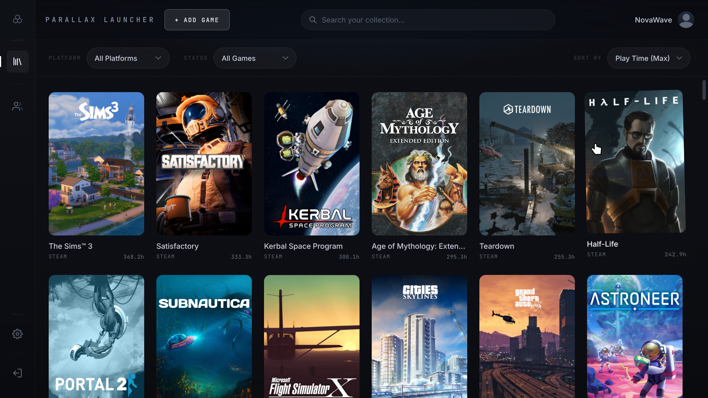
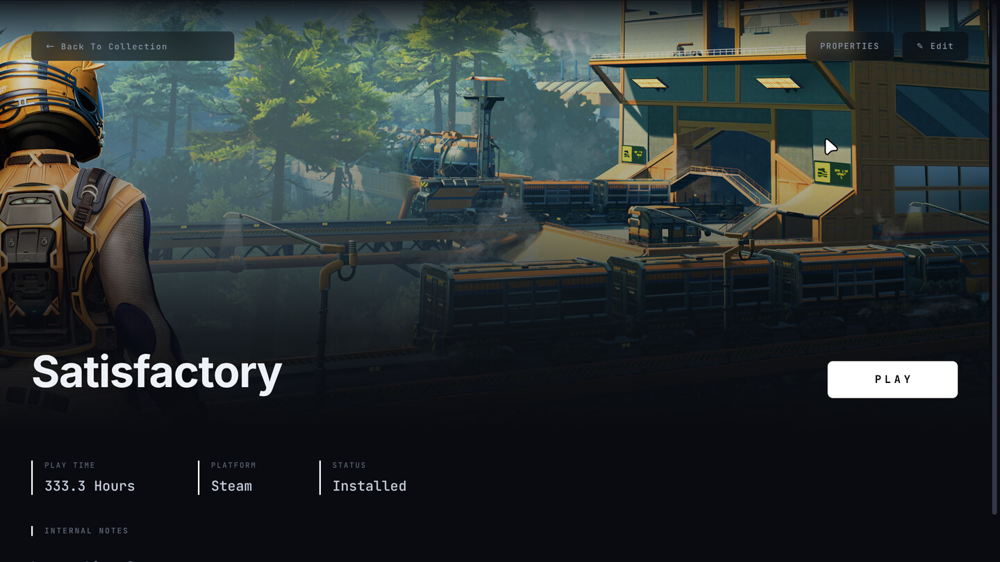
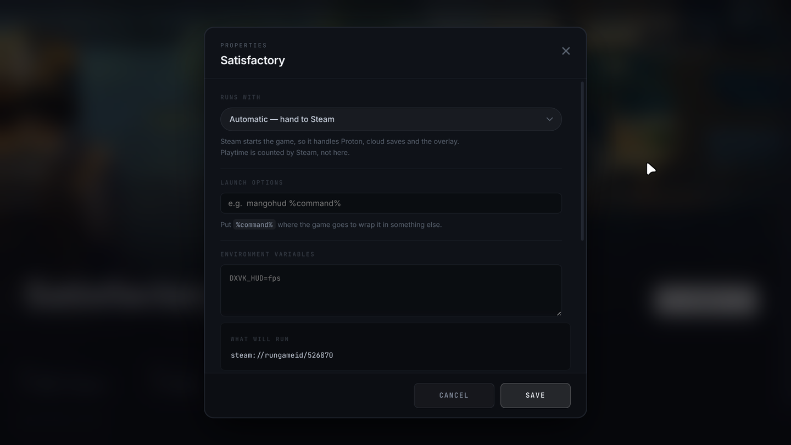

Your installed games, exactly
Reads Steam's library folders and install manifests directly — across every drive, with the real name and app id for each one.
Parallax Launcher finds the games already on your disk, fills in their artwork, and starts them. Everything it knows stays on your computer — no account, no telemetry, and a library you can open in a text editor.
Free software under the GNU GPL v3. No install — make it executable and run it.

No scanning folders and hoping. Parallax opens Steam's own installation records, so what it shows you is what is actually on the disk.
Reads Steam's library folders and install manifests directly — across every drive, with the real name and app id for each one.
Hand the game to Steam, or run it directly so the Steam window never jumps to the front. Set per game, and it shows the exact command first.
Pulls official covers and banners from Steam's public images — free, no sign-up, no rate limit. Add a SteamGridDB key and the community's work opens up too.
Counts the sessions it starts, and merges in what Steam recorded before you ever opened this — taking the larger number, never overwriting.
Per-game runtime, launch options with Steam's %command%
syntax, environment variables, GameMode and MangoHud.
The library is a text file. The images are ordinary images. Nothing is uploaded anywhere, and there is no account to make.
Compatibility settings the way Steam lays them out — and one line the others leave out: the exact command that is about to run.


Every string in the app exists in all of them — not a partial translation that falls back to English halfway down a screen.
All three are built from the same source by the same automated run, and all three keep themselves up to date.
One file. Your browser downloads it without permission to run, so
give it that first — right-click, Properties, tick allow
executing, or chmod +x on the file. Then open it.
It adds itself to your application menu on first run, and because it
is a single file it can replace itself: it watches for new releases
and offers to fetch one.
Installs the way your other software does and shows up in your menu with
everything else. It updates itself too, through dpkg — which
means it asks for your password the way any install does. Add the
repository below and your system takes that over instead.
An ordinary installer — it asks where to put things and makes the shortcuts. It watches for new versions and replaces itself when you say so.
Windows blocks it the first time — here is how to get past it Download for WindowsYour library, your settings and your artwork live in
~/.config/parallax-launcher on Linux and
%APPDATA%\parallax-launcher on Windows. None of the steps
below touch that folder, so reinstalling picks up where you left off —
delete it yourself if you want everything gone.
Delete the file. It also left a menu entry and an icon behind, since it put itself in your menu:
rm ~/.local/share/applications/parallax-launcher.desktop
rm ~/.local/share/icons/hicolor/256x256/apps/parallax-launcher.png
rm -r ~/.cache/parallax-launcher-updaterRemove it the way you would anything else. If you added the repository, drop that too:
sudo apt remove parallax-launcher
sudo rm /etc/apt/sources.list.d/parallax.listSettings, Apps, Parallax Launcher, Uninstall. Same as anything else.
On Debian or Ubuntu you can add the package repository instead and let your system handle updates — the commands are here. Running from source is in the readme.